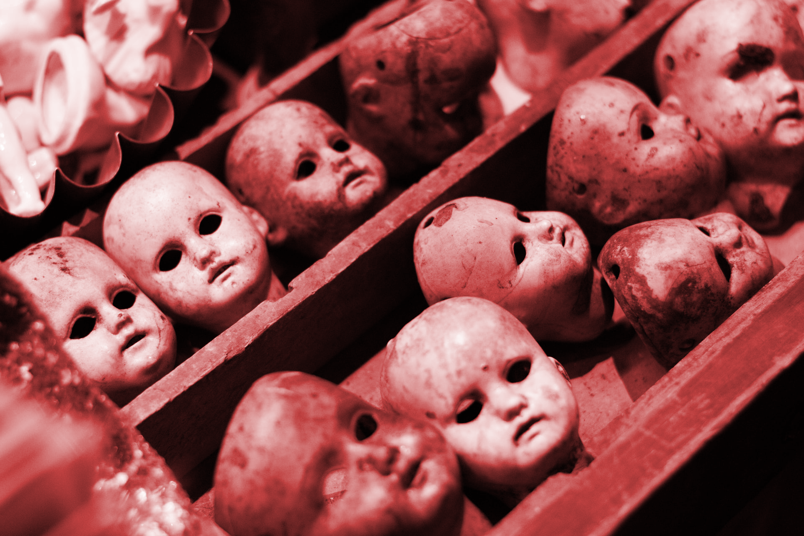
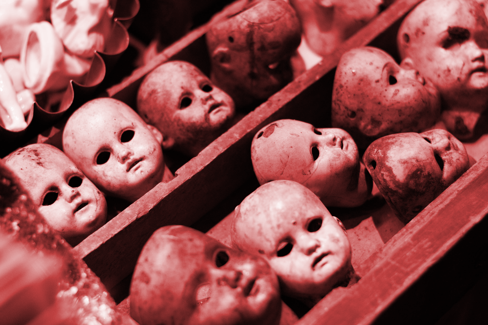

恐怖故事分享由來
由於過去到現在，這麼長時間以來發生了許多不可思議的事件，小時候常常不經意地就會看到別人看不到的好兄弟，他們要是知道你看的到他們有可能會纏著你， 當時常常晚上遇到一些超自然現象，而且年紀小不懂事的時候，都會玩錢仙、筆仙因為我們覺得那個他很厲害知道好多我們不知道的事，但是我們當時互相猜忌認為是朋友惡作劇， 在那之後因為親人過世後還有看到出現在家中，當時我並不害怕還想深入了解，所以我對這方面又好奇又很感興趣，也想分享更多故事給靈異愛好者。

由於過去到現在，這麼長時間以來發生了許多不可思議的事件，小時候常常不經意地就會看到別人看不到的好兄弟，他們要是知道你看的到他們有可能會纏著你， 當時常常晚上遇到一些超自然現象，而且年紀小不懂事的時候，都會玩錢仙、筆仙因為我們覺得那個他很厲害知道好多我們不知道的事，但是我們當時互相猜忌認為是朋友惡作劇， 在那之後因為親人過世後還有看到出現在家中，當時我並不害怕還想深入了解，所以我對這方面又好奇又很感興趣，也想分享更多故事給靈異愛好者。
這是發生在幾年前的一個沒有月亮的半夜〈夜黑風高殺人夜~〉， 地點是北部某一家極有名的大醫院，小弟的父親因為身體不適正在醫院休養， 小弟當日輪班，在醫院照顧父親。 先生！先生！起來了！ 叫醒我的是一個漂亮的晚班護士，有著姣好的身材，正是我喜歡的類型， 就在我茫茫然看著眼前的護士時，突然發現我的父親也在一旁瞪著我， 阿....我甚麼時候睡著了？ 千恩萬謝的送走了那個漂亮的護士〈臨走前不忘偷喵幾眼 〉 我老爸說你這死小孩！不要以為我不知你在想什麼，老子躺在病床上，你給我 睡到打鼾，害我都沒得睡了。 〈汗！我早上念了10幾個小時的書，晚上自然會愛睏嘛 〉 阿.....就.....，正當我不知該說什麼的時候，我父親說道，差不多該天亮了， 我昨晚都沒吃到飯，你幫我去外面買個清粥回來。 我看了下手錶，汗！現在才四點出頭而已，什麼快天亮了～ 父命難違，小弟我披星戴月趕著黑暗往醫院外奔去 〈事實上是一路看著漂亮的夜班護士 〉 大家都知道，半夜的醫院是很恐怖的，除了不時走過幾個護士或病人外，整個 醫院你看不到一個人，小弟我走到了醫院的電梯路口，那裡除了一個還在播放 著的電視外，空無一人，小弟戰戰兢兢的等著電梯，心裡不勝恐懼， 叮咚！電梯總算來了，一路往下，緩慢而無人的密閉空間裡實在很鬱悶，我試 圖唱個歌來解解悶，但又怕被監視錄影器上的人看到以為是白癡， 一路無奈到了七樓，叮咚！有個阿婆進來了，雖然有人陪是好事，但那阿婆 也挺奇怪的，按了按鈕一句不發就往旁邊站去了，害我又一陣無聊，到了五樓， 阿婆出去 了，又只剩下我一個人了，無聊阿！ 到了三樓，又進來了一個人，是一個年輕的女生，一進來好像看到鬼似的，那 驚恐的臉龐我到現在都還沒忘記，什麼東西阿！ 只不過是和一個男生在半夜一起坐電梯而已，有必要那麼擔心嗎？我又不會吃了你， 到了二樓，那女生衝的一下出去了，留下滿臉無言的我在電梯裡， 好不容易要到一樓了，小弟我收拾剛剛不滿的心情，打算開始找清粥的時候，我 注意到了...一樓～居然沒停！ 我日！全電梯就我一個人，我一樓的鈕早不知按了多久了，它竟然沒給我停！ 我有了很不好的預感， 我傻傻的看著電梯停在了地下一樓的門口，我靠！ 這間醫院的停屍間在地下一樓耶！ 別開玩笑了！要我在半夜看到那些東東，沒門！ 顯然我是幸運的，但也是超不幸的，我並沒有看到有人搬著「東西」進來！ 當然沒有啦，因為電梯門口根本沒有人！ 一個人也沒有，連燈光也沒有，整個漆黑一片的，我 無言的發呆了一秒左右，靠！趕快狂按電梯的關門鈕。 看著電梯門緩緩的關閉，我心裡真不知該怎麼形容了，我...她媽媽真好！ 在心裡狂唸大悲咒，觀音咒之類的經文下，我總算到了一樓 〈那台電梯還很好心的載我到了地下二樓，只是沒有停。〉 我心裡狂罵著的走出來，我XXX我日！ 電梯門才一開，我就嚇到了，在門外是剛剛那個七樓的阿婆。

最近剛剛聽說了一件怪事，就在前幾天一個加油站的女加油員，晚上突然死亡了。根據調查是被嚇死的 前些天的一個晚上女加油員還想往常一樣坐在小板凳上玩著新買的手機，想著明天和自己的男朋友上哪裡玩去。就在這時。點燈光把個黑夜劃破了，遠處行駛來了一輛拉大卡車，慢慢的在加油機邊上停下來了。這時那個加油員心裡憤憤的，心想“這好容易給自己的男朋友發個簡訊吧，還來個車加油，真是沒天理了”。可是沒辦法啊，先做好自己的工作再說吧。加油員從椅子上站了起來走到了加油機旁邊。 車門打開了，從車上走下來一個上身穿祿衣服，下身穿黑褲子的年輕男人，加油員好奇就往車廂裡看了看上面還坐著個女的，大紅的衣服，在黑夜裡顯得是那麼的妖艷。加油員心裡還想呢，真是林子大了什麼鳥都有啊，這種打扮還趕趕時髦，就是粉塗的太多了，刷白刷白的，怎麼看怎麼別扭。加油員也是個神經比較大的人也沒多想。就問了，“帥哥，加多少油啊”。一邊說著還拋了個媚眼。就聽見這個男的用一種及其別扭的聲音說，加滿。聽他說完話。加油員起了一身雞皮疙瘩，心說，虧了沒在古代，要是在古代這個哥們肯定是當太監的痞子，也太像了，真是世界無邊大啊，什麼事都可能啊。還白白浪費了自己這個媚眼啊。心裡這麼感嘆著，打開油箱蓋，拿起加油槍，哼著時下最流行的小曲，開始加油了。 加了沒一會就滿了，加油員看看計價器，扭過頭對著那個男的說“帥哥，一共是1千9百50員整。”那個男的，從祿褂子裡摸索了一下，掏出一沓錢來，全都是一百的。那個男的拿出20張來給了加油員，加油員把錢拿過來，無意中看到那個男的手也是刷白刷白的，心裡就咯噔了一下，但是就是覺得不對勁，反正就是說不出來。“帥哥，你等會我給你找錢去哈。”說著就跑到財務室，把錢給了經理，等著經理找錢。經理拿過錢，臉刷一下就變白了。加油員一看，笑著說：經理你的臉怎麼也白了啊。經理吧錢舉起來“你看看這是錢嗎”。加油員湊過去一看可不嘛，這哪裡是錢啊，這不都是冥紙嗎。當時加油員就傻了。經理說趕緊追，這不是騙人呢嗎。快點快點。經理和加油員都追了出來，一看外邊什麼人都沒有，冷冷清清的，天還是那麼黑。經理提鼻子一聞，怎麼這麼大的汽油味啊。低頭一看，地上有一地的汽油。經理這時更火了，就指著加油員“你就是會玩手機看看你干的好事”。加油員這時也張耳摸不著頭腦了啊。經理趕緊去把監控提了出來，一看，嚇得都說不出來話了。加油員上前一看，原來剛才加油的車是一輛紙胡的汽車，下來給錢的也是個紙胡的人，當加完了油，那個紙胡的紙人，衝著監控擺了擺手，上了紙胡的汽車，在看紙車上面寫著幾個血紅血紅的大字，“陰間施工車”。車就這樣慢慢的消失在了無邊的黑夜當中了。女加油員當場嚇暈過去了，馬上送到醫院進行搶救，經過搶救無效死亡，在死亡的一剎那，女加油員突然用太監的聲音說了一句，光看不轉，到大黴。轉了以後三天就一筆極大的財富。我也沒辦法！！
 

安娜貝爾的真實故事發生於1970年，一位母親在玩具店，購買了一個布娃娃，送給正在就讀大學的女兒Donna (唐娜)，當娃娃家加入了她們的生活以後唐娜與他的大學室友Angie(安吉)，開始發現到一些奇怪的現象。 起初娃娃只是或躺或站或雙手交叉的改變自己的動作，後來她們發現每次出門前唐娜都會把娃娃放在自己床上，但回家的時候就會發現娃娃不是出現在客廳沙發就是在其他的地方。 唐娜有一名好友Lou (盧)，覺得這個娃娃不乾淨且邪惡，叫她們把娃娃扔掉，但身為大學生的唐娜卻不信這種怪力亂神，至此以後越發不可思議的事情發生了，唐娜與安吉開始在家裡的各處看到寫了字的羊皮紙，內容不外乎是「救救我們」或是「救救盧」，更有一次當她們回家時，發現娃娃身上出現類似人類的血跡，終於，她們決定請靈媒來調查這個娃娃。 靈媒在了解整個事情的緣由後她告訴她們:「在這棟公寓興建之前，一名年約七歲的小女孩屍體在工地處被發現，妳們帶來娃娃之時她便附生在上面，並觀察妳們，她覺得妳們是值得信任的，想與妳們生活在一塊，這小女孩名叫” Annabelle Higgins”(安娜貝爾.希金斯)」 唐娜依舊讓安娜貝爾娃娃與她們生活在一塊，但依然堅持要丟棄娃娃的盧可就沒有那麼幸運。 他開始夢到安娜貝爾爬上他的床，並緊緊掐住他的脖子，每當他驚醒的時候都能感到一股強烈的窒息感，彷彿真的被人掐住喉嚨般無法呼吸，更可怕的是，一日當盧與安吉想要出去購物的時候，他們聽到唐娜的房間傳出了陣陣的腳步聲，當盧打開房門的時候，只看見空無一人的房間角落躺著安娜貝爾，當他走近娃娃的時候，感到有人在後面盯著他瞧，盧下意識的轉身察看，忽然感到空口一陣劇痛，他感到自己的胸口正在被利器撕開，當他脫下衣服看的時候，只見許多血紅般的莫名爪痕在他身上，卻不知道從何而來，唯一的解釋，安娜貝爾正在用他的方式傷害他。 盧的傷口意外的複合神速，沒有爪痕更沒有留下疤痕，彷彿沒發生過事情一般，唐娜等人也決定要求助於宗教的力量，他們聯繫的聖公會的人，請他們派人來處理，聖公會的人也決定派由 「Ed and Lorraine Warren」 華倫夫婦來處理此事。 之後的事情就如同電影般，華倫夫婦很快地得出結論，這個名為安娜貝爾的娃娃是一個極其危險的兇靈，必須要將它帶走，否則將危及其他人的安全。 據聞，在華倫夫婦載安娜貝爾回去的路上，差點發生危險的死亡車禍，往後所接觸的神職人員或是有意嘲弄安娜貝爾娃娃的民眾也發生不少危及生命的意外，逼得華倫夫婦不得不將它裝在櫃子裡囚禁起來，才得以讓它不再害人，得到控制


兩年多前我剛到澳洲後的一個月，很幸運地剛上完一個月的語言課程，就順利地找到了一家美容美甲院上班，我便從Gold Coast搬到了Brisbane，因為Toowong的房子房客要3週後才會推租，所以我只能暫且找一個短租的房子先住下，runcorn在sunnybank附近，sunny bank是Brisbane華人聚集區，所以很方便，主要房租也便宜，$90AUD一週，比起我要承租的Toowong的房價還便宜$45,自從那次後，我不在找太太太便宜的房子，因為runcorn是窮人區，被搶空們的也多，晚上也最好別單獨出門，而且最讓我受不了的是華人區，尤其是跟華人學生住髒的要死，在來就是磁場不乾淨，真的不能住。 房東告訴我，樓下住一個澳洲老頭，我對門的房間住一個中國男學生，他回中國過年了，3個月不會回來(那時後剛好是中國年，也是澳洲的暑假)，第一天晚上睡覺時我就發現大地震，心想，靠，真倒霉剛到澳洲沒多久就遇大地震，快逃生吧！我起不來，被一個黑黑的感覺是大塊頭的男人壓住我，而且我看了一下四周，只有我的床在震動(有路燈的微光照進我的房裡，所以我能確定，只有我的床在震)，我馬上飆髒話，不知道為什麼那壓在我身上的傢伙走了，我的床不動了，我起身開燈，馬上打給家人，說我被壓了，他們教我唸佛，我用手機放了佛經，幾個晚上也沒被壓，但是晚上都有人在洗澡，而且對門男同學好像沒回中國似的，晚上有時會開燈，我問樓下老頭，晚上是你在樓上洗澡嗎？他說我樓下有自己的衛浴不會上樓洗，可是我很確定不是他，就是對門的男學生在洗澡，因為我要去洗澡的時後，都有人在洗澡，有個晚上，老闆載我回家，順便在我家樓下跟我聊了幾分鐘(因為我才上幾天班，精神狀態越來越差，黑眼圈都出來了，所以她關心了我幾句)，就在這時候我看到對門的男學生站在他的窗口面無表情的看著我和我老板，我心裡想，死阿陸阿，真沒禮貌，老闆回家後，我上樓，確定他在裡面，因為他的燈開著，我敲他的門，但他不理，我試著開，他上了鎖，我跑下樓叫老頭，問老頭說，他是不是沒回中國？或偷跑回來？老偷說，今天他一整天在家，沒有人回來，而且沒鑰匙外人不可能進家門，我怕小偷，所以讓他陪我去看，他的房間似乎沒有人一樣，因為房東去開了房門也說沒人，我就在隔天退租了，去同事家住一週。可是人比鬼可怕，如果他不是鬼，那也可能是小偷，不搬家的話真的很危險。 過了很久，我沒在遇過奇怪的事，但在上個月，我在放黃慧音小姐唱的金剛經，那天我很確定樓下的室友去上班，房東的小孩去上學，房東剛開著她的車出門，可是有人來敲我的房門，我開了門，沒聽到腳步聲，但就是沒人在門外，我關上門又被敲，我直接開門，不在關上門，歡迎祂們進來聽吧！哈哈哈哈～